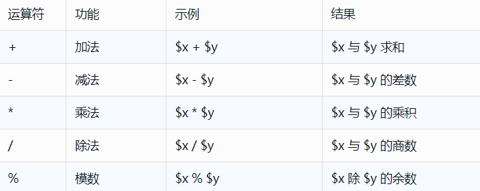
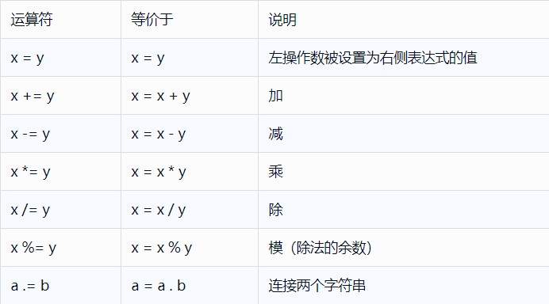
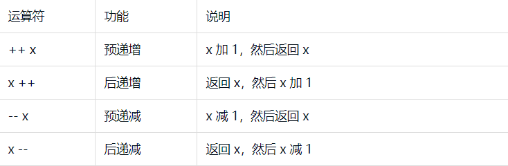
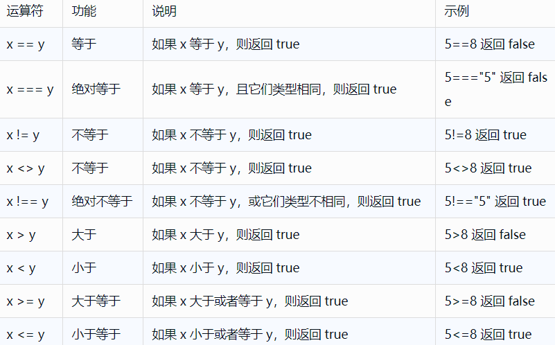
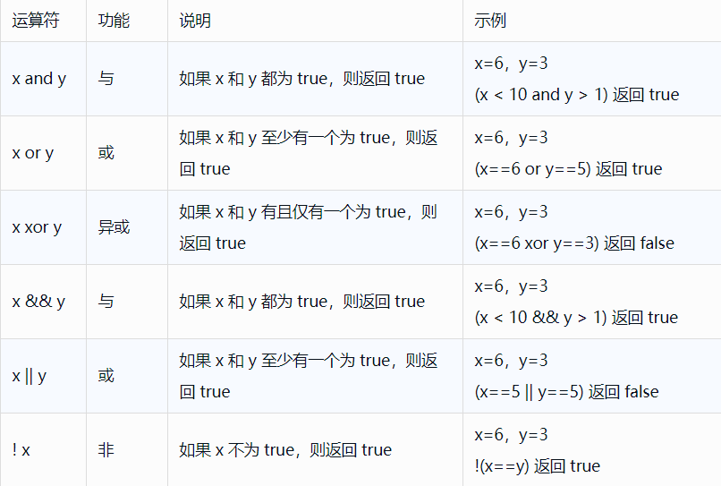
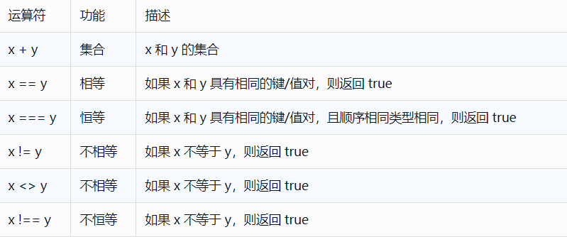
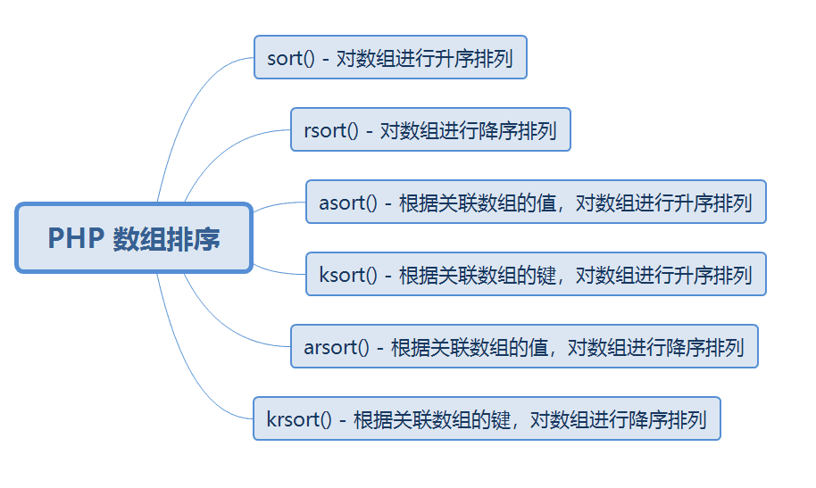
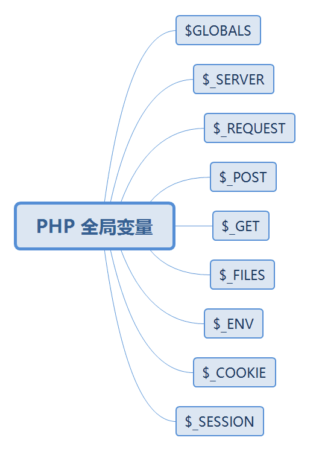

原文连接:https://www.cnblogs.com/dashucoding/p/10774741.html
php常量，常量是不能被改变的，由英文字母，下划线，和数字组成，但是数字不能作为首字母出现。
bool define ( string $name , mixed $value [, bool $case_insensitive = false ] )<?php
// 区分大小写的常量名
define("44", "Welcome to 444");
echo 44;
echo '<br>';
echo 55;
?><?php
// 不区分大小写的常量名
define("Da", "Welcome to dashu", true);
echo da;
?>字符串变量是用于存储并处理文本的，包含有字符的值，创建，使用，存储在变量中
<?php
$txt="Hello world!";
echo $txt;
?>运算符（.）用于把两个字符串值连接起来
strlen()函数返回字符串的长度
<?php
echo strlen("Hello world!");
?>Strpos() 函数用于在字符串内查找一个字符或一段指定的文本。
<?php
echo strpos("Hello world!","world");
?>





三元运算符
(expr1) ? (expr2) : (expr3)PHP 条件语句
if (条件)
{
条件成立时要执行的代码;
}
if (条件)
{
条件成立时执行的代码;
}
else
{
条件不成立时执行的代码;
}
if (条件)
{
if 条件成立时执行的代码;
}
elseif (条件)
{
elseif 条件成立时执行的代码;
}
else
{
条件不成立时执行的代码;
}
<?php
switch (n)
{
case label1:
break;
case label2:
break;
default:
}
?>PHP 循环
while (条件为真) {
}
do {
} while (条件为真);
for (初始值; 条件; 增量)
{
}
foreach ($array as $value)
{
}PHP 函数
<?php
function functionName()
{
// 要执行的代码
}
?>PHP默认参数值
<?php
function aa($aaa=50) {
echo "The is : $aaa<br>";
}
aa(); // 将使用默认值 50
?>PHP函数返回值
<?php
function add($x,$y)
{
$total=$x+$y;
return $total;
}
echo "1 + 5= " . add(1,5);
?>PHP 数组
array();
$name=array("a","b","c");获得数组的长度
<?php
$name=array("a","b","c");
echo count($name);
?>遍历索引数组
<?php
$name=array("a","b","c");
$arrlength=count($name);
for($x=0;$x<$arrlength;$x++) {
echo $name[$x];
echo "<br>";
}
?>遍历关联数组
<?php
$age=array("a"=>"aa","b"=>"bb","c"=>"cc");
foreach($age as $x=>$x_value){
echo "Key=" . $x . ", Value=" . $x_value;
echo "<br>";
}
?>
<?php
$aaa = array
(
"course"=>array
(
"c",
"https://a/list"
),
"class"=>array
(
"b",
"https://a.com"
),
"coding"=>array
(
"a",
"https://aa.com"
)
);
print("<pre>"); // 格式化输出数组
print_r($aaa);
print("</pre>");
?>PHP 数组排序

PHP 全局变量

// $GLOBALS全局变量
<?php
$x = 2;
$y = 3;
function add() {
$GLOBALS['z'] = $GLOBALS['x'] + $GLOBALS['y'];
}
add();
echo $z;
?>$_SERVER全局变量
$_REQUEST 用于收集HTML表单提交的数据
$_POST全局变量
$_GET全局变量
PHP 表单， $_GET 和 $_POST 用于收集表单数据
PHP下拉菜单单选
<?php
$q = isset($_GET['q'])? htmlspecialchars($_GET['q']) : '';
?>PHP下拉菜单多选（ multiple="multiple"）
PHP 表单验证
htmlspecialchars() 函数把特殊字符转换为 HTML 实体
<script>location.href('http://www.aaa.com')</script>PHP 日期函数
string date ( string $format [, int $timestamp ] )date()格式化日期
d--代表月中的天（01-31）、m--代表月（01--12）、Y--代表年（四位数）、1--代表周里的某天
获取时区
<?php
date_default_timezone_set("Asia/Shanghai");
echo "当前时间是 " . date("h:i:sa");
?>readfile()函数读取文件，并把它写入输入缓冲
fopen()函数第一个参数包含被打开的文件名，第二个参数规定打开文件的模式
fread() 函数读取打开的文件
fclose()函数用于关闭打开的文件
fgets()函数用于从文件读取单行
fgetc()函数用于从文件中读取单个字符
fopen()函数也用于创建文件
fwrite()函数用于写入文件
创建一个文件上传表单
<html>
<body>
<form action="upload_file.php" method="post"
enctype="multipart/form-data">
<label for="file">Filename:</label>
<input type="file" name="file" id="file" />
<br />
<input type="submit" name="submit" value="Submit" />
</form>
</body>
</html>创建上传脚本
<?php
if ($_FILES["file"]["error"] > 0)
{
echo "Error: " . $_FILES["file"]["error"] . "<br />";
}
else
{
echo "Upload: " . $_FILES["file"]["name"] . "<br />";
echo "Type: " . $_FILES["file"]["type"] . "<br />";
echo "Size: " . ($_FILES["file"]["size"] / 1024) . " Kb<br />";
echo "Stored in: " . $_FILES["file"]["tmp_name"];
}
?>$_FILES["file"]["name"]
被上传文件的名称
$_FILES["file"]["type"]
被上传文件的类型
$_FILES["file"]["size"]
被上传文件的大小，以字节计
$_FILES["file"]["tmp_name"]
存储在服务器的文件的临时副本的名称
$_FILES["file"]["error"]
由文件上传导致的错误代码
上传限制
<?php
if ((($_FILES["file"]["type"] == "image/gif")
|| ($_FILES["file"]["type"] == "image/jpeg")
|| ($_FILES["file"]["type"] == "image/pjpeg"))
&& ($_FILES["file"]["size"] < 20000))
{
if ($_FILES["file"]["error"] > 0)
{
echo "Error: " . $_FILES["file"]["error"] . "<br />";
}
else
{
echo "Upload: " . $_FILES["file"]["name"] . "<br />";
echo "Type: " . $_FILES["file"]["type"] . "<br />";
echo "Size: " . ($_FILES["file"]["size"] / 1024) . " Kb<br />";
echo "Stored in: " . $_FILES["file"]["tmp_name"];
}
}
else
{
echo "Invalid file";
}
?>保存被上传的文件
<?php
if ((($_FILES["file"]["type"] == "image/gif")
|| ($_FILES["file"]["type"] == "image/jpeg")
|| ($_FILES["file"]["type"] == "image/pjpeg"))
&& ($_FILES["file"]["size"] < 20000))
{
if ($_FILES["file"]["error"] > 0)
{
echo "Return Code: " . $_FILES["file"]["error"] . "<br />";
}
else
{
echo "Upload: " . $_FILES["file"]["name"] . "<br />";
echo "Type: " . $_FILES["file"]["type"] . "<br />";
echo "Size: " . ($_FILES["file"]["size"] / 1024) . " Kb<br />";
echo "Temp file: " . $_FILES["file"]["tmp_name"] . "<br />";
if (file_exists("upload/" . $_FILES["file"]["name"]))
{
echo $_FILES["file"]["name"] . " already exists. ";
}
else
{
move_uploaded_file($_FILES["file"]["tmp_name"],
"upload/" . $_FILES["file"]["name"]);
echo "Stored in: " . "upload/" . $_FILES["file"]["name"];
}
}
}
else
{
echo "Invalid file";
}
?>PHP cookie
Cookie常用于识别用户
setcookie(name, value, expire, path, domain);<?php
setcookie("user", "dashucoding", time()+3600);
?>
<html>
<body>
</body>
</html>$_COOKIE变量用于取回cookie的值
<?php
//输出cookie值
echo $_COOKIE["user"];
//查看所有cookie
print_r($_COOKIE);
?>使用isset()函数来确认是否设置了cookie
<html>
<body>
<?php
if (isset($_COOKIE["user"]))
echo "Welcome " . $_COOKIE["user"] . "!<br />";
else
echo "Welcome!<br />";
?>
</body>
</html>删除cookie
<?php
// 设置 cookie 过期时间为过去 1 小时
setcookie("user", "", time()-3600);
?>浏览器不支持cookie
在应用程序中从一张页面向另一张页面传递信息
<html>
<body>
<form action="welcome.php" method="post">
姓名: <input type="text" name="name" />
年龄: <input type="text" name="age" />
<input type="submit" />
</form>
</body>
</html><html>
<body>
Welcome <?php echo $_POST["name"]; ?>.<br />
You are <?php echo $_POST["age"]; ?> years old.
</body>
</html>PHP session变量用于存储关于用户会话信息，或者更改用户会话设置
工作机制
为每个访问者创建一个唯一的 id (UID)，并基于这个 UID 来存储变量。UID 存储在 cookie 中，亦或通过 URL 进行传导。
<?php session_start(); ?>
<html>
<body>
</body>
</html>存储session变量
<?php
session_start();
// 存储session数据
$_SESSION['add']=1;
?>
<html>
<body>
<?php
//检索session数据
echo "浏览量=". $_SESSION['add'];
?>
</body>
</html><?php
session_start();
if(isset($_SESSION['views'])){
$_SESSION['views']=$_SESSION['views']+1;}
else{
$_SESSION['views']=1;}
echo "浏览量：". $_SESSION['views'];
?>unset()函数用于释放指定的session变量
session_destroy()彻底销毁session
<?php
unset($_SESSION['views']);
?>
<?php
session_destroy();
?>mail()函数用于从脚本中发送电子邮件
mail(to,subject,message,headers,parameters)<?php
$to = "dashucoding@qq.com"; // 邮件接收者
$subject = "参数邮件"; // 邮件标题
$message = "这是邮件的内容。"; // 邮件正文
$from = "dada@qq.com"; // 邮件发送者
$headers = "From:" . $from; // 头部信息设置
mail($to,$subject,$message,$headers);
echo "邮件已发送";
?><html>
<body>
<?php
if (isset($_REQUEST['email']))
//如果接收到邮箱参数则发送邮件
{
//发送邮件
$email = $_REQUEST['email'] ;
$subject = $_REQUEST['subject'] ;
$message = $_REQUEST['message'] ;
mail( "someone@example.com", "Subject: $subject",
$message, "From: $email" );
echo "邮件发送成功";
}
else
//如果没有邮箱参数则显示表单
{
echo "<form method='post' action='mailform.php'>
Email: <input name='email' type='text' /><br />
Subject: <input name='subject' type='text' /><br />
Message:<br />
<textarea name='message' rows='15' cols='40'>
</textarea><br />
<input type='submit' />
</form>";
}
?>
</body>
</html>
// 有问题的代码防止email注入的最好方法是对输入进行验证
<html>
<body>
<?php
function spamcheck($field)
{
// filter_var() 过滤 e-mail
// 使用 FILTER_SANITIZE_EMAIL
$field=filter_var($field, FILTER_SANITIZE_EMAIL);
//filter_var() 过滤 e-mail
// 使用 FILTER_VALIDATE_EMAIL
if(filter_var($field, FILTER_VALIDATE_EMAIL))
{
return TRUE;
}
else
{
return FALSE;
}
}
if (isset($_REQUEST['email']))
{
// 如果接收到邮箱参数则发送邮件
// 判断邮箱是否合法
$mailcheck = spamcheck($_REQUEST['email']);
if ($mailcheck==FALSE)
{
echo "非法输入";
}
else
{//发送邮件
$email = $_REQUEST['email'] ;
$subject = $_REQUEST['subject'] ;
$message = $_REQUEST['message'] ;
mail("someone@example.com", "Subject: $subject",
$message, "From: $email" );
echo "Thank you for using our mail form";
}
}
else
{
// 如果没有邮箱参数则显示表单
echo "<form method='post' action='mailform.php'>
Email: <input name='email' type='text' /><br />
Subject: <input name='subject' type='text' /><br />
Message:<br />
<textarea name='message' rows='15' cols='40'>
</textarea><br />
<input type='submit' />
</form>";
}
?>
</body>
</html>PHP 错误
<?php
if(!file_exists("da.txt")){
die("文件不存在");
}else{
$file=fopen("da.txt","r");
}
?>结言
好了，欢迎在留言区留言，与大家分享你的经验和心得。
感谢你学习今天的内容，如果你觉得这篇文章对你有帮助的话，也欢迎把它分享给更多的朋友，感谢。
感谢！承蒙关照！您真诚的赞赏是我前进的最大动力！